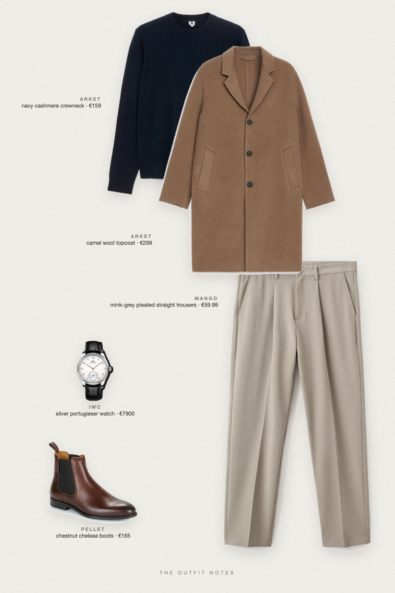
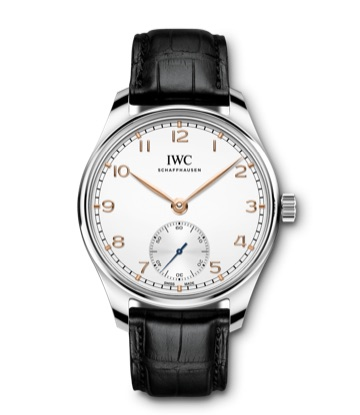

Camel Quiet
loro piana look for less

A Loro Piana look for less: the same quiet luxury palette of camel coat, navy cashmere and soft grey trousers, built from ARKET and Mango. Inspired by the reference, not the brand. Pellet chestnut chelsea boots and an IWC Portugieser on the wrist. Old money winter outfit for men on a budget.
The pieces
This page contains affiliate links: if you buy through them, we may earn a commission at no extra cost to you. Disclosure.
 ARKET
ARKET
Camel wool topcoat
Shop ARKET
ARKET
Navy cashmere crewneck
Shop Mango
Mango
Mink-grey pleated straight trousers
Shop Pellet
Pellet
Chestnut chelsea boots
Shop
IWC
Silver portugieser watch
Shop
Prices are indicative, taken when the look was published, and may have changed. Pictures of the outfit are AI-generated illustrations of real products; the product photos are the retailers' own.
Published 2 October 2026.